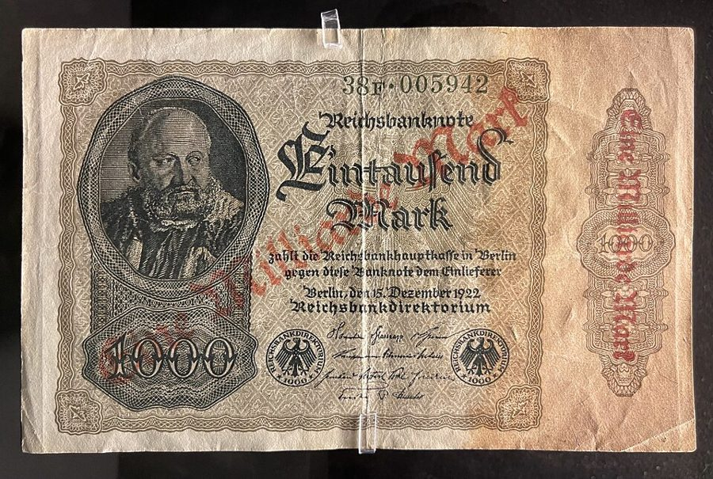
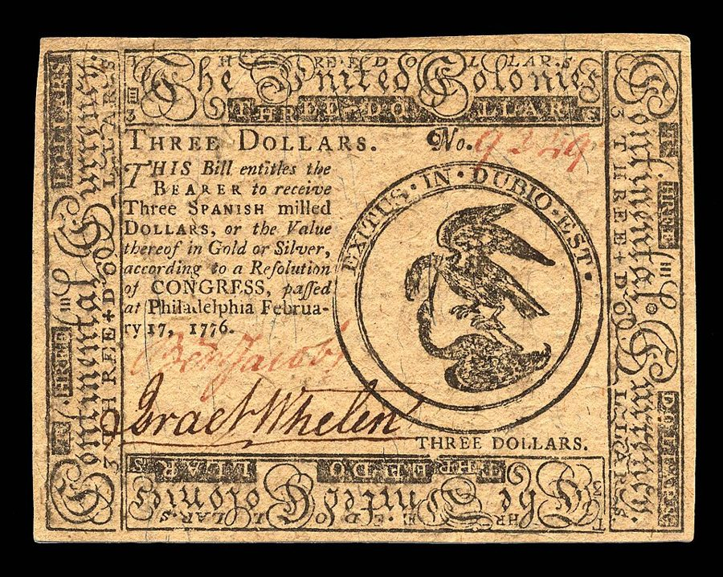
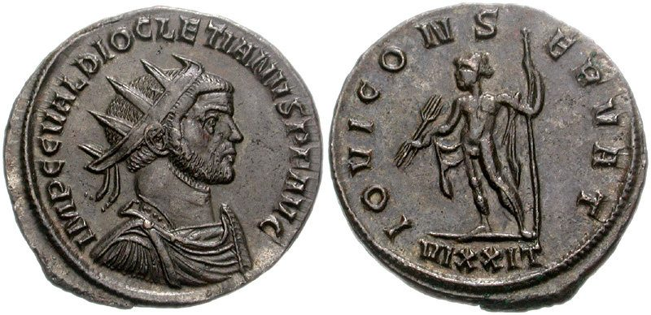

这一章在做什么
这一章讲通胀从哪来、怎么治。作者从两张纸讲起：五美元钞票能换东西，杂志彩页不能，差别只在大家都相信前者有价值。然后用殖民地的烟草货币、各国十几年的数据和几场恶性通胀论证：持续的通胀只有一个来源，货币比产出长得快；今天货币多少由政府决定。政府爱印钱，因为通胀是一种不用投票的税。疗法只有一个，放慢货币增长；减速和失业是疗程的副作用，躲不开，只能减轻。读的时候抓两条线：谁在印钱、谁在交税；疗法和副作用怎么分。

德国国家银行 1922 年 12 月印的一千马克，1923 年恶性通胀时加盖红字，改成十亿马克（Eine Milliarde Mark）。票面上还印着「凭票向持票人兑付」，和 §1 那张五美元钞票上已经删掉的承诺是同一类话。Wolfmann，CC BY-SA 4.0，维基共享资源 读之前：先下注
第 1 章说通胀给价格信号加了「静电」，让人分不清是一样东西真的紧俏了，还是所有东西都在涨；第 3 章讲货币数量猛缩带来大萧条。这一章是第 3 章的反面：货币数量涨得太快。全书的工具在这里用得最直接：第 1 章说价格要把准确的信息传出去，通胀恰恰把这条信息搅乱，作者要说明搅乱它的正是政府。读完这一章，第 10 章讲的「宪法上限制政府开支和印钞」就有了来由。
1970 年代美国通胀一路走高，1979 年超过 13%。持续这么多年的通胀，主要该怪谁？
欧佩克一次又一次抬高油价
工会压着企业涨工资，成本推着物价走
大企业利用市场地位抬价
政府和联储让货币增长得太快
从别国输入的，各国一起在涨
政府用新印的钞票修了一条路：没加税，也没向公众借钱。这条路的钱，最终是谁出的？
没人出：经济里本来就有闲着的人手和材料
将来的纳税人
修路的工人，工资被物价吃掉了
所有手里拿着钱的人
买政府债券的人
持续的通胀到底从哪来？既然人人都说反对通胀，政府为什么一再制造它，治起来又为什么那么疼？
作者说欧佩克抬油价只造成了「一次性」的物价上涨。他拿哪几个国家对比？这个对照能说服你吗？§3
印钞修路，没人加税，作者却说有人交了税。是谁，交给了谁，有没有人投过票？§5
作者说失业是治通胀的「副作用」，不是「疗法」。阑尾炎的比喻贴切吗？§7
作者主张政府部门全面按通胀自动调整，私人经济却只在过渡期用。两边为什么不一样？§8
这一章的论证骨架
这一章前后是两半：§1–§5 是诊断（钱为什么值钱、通胀的近因、政府为什么多印、谁从中得利），§6–§10 是处方（疗法、副作用、怎么减轻、日本的例子、五条结论）。最容易乱的是 §3 和 §4 的分工：§3 只证明「通胀是货币现象」，§4 才回答「货币为什么会多」。§3 中间原书有五张各国的图，图本身没法在文字里读，抓住作者从图里得出的结论即可。
纸币值钱，只因大家都信 · §1–§2
近因：货币比产出长得快 · §3
被排除的嫌疑：工会、商人、
石油、进口、生产率
深层原因：政府为什么多印钱 · §4
开支增长，不愿加税
追逐「充分就业」
联储盯利率不盯货币
政府得到的好处：通胀是一种税 · §5
持币者的购买力
税级自动爬升
国债被通胀冲淡
疗法：放慢货币增长 · §6
副作用：减速、失业 · §7
减轻：渐进、预告、伸缩条款 · §8
例证：日本 · §9
§8 反对的办法：物价工资管制。§10 用五条结论收尾
本站画的示意图。疗法和副作用之间的箭头是这一章的要点：作者说减速和失业是治疗必然带来的，不是治疗本身。 边读边填：每行一个问题，读到答案就写一两句。只存在你这台设备的浏览器里，别人看不到。
读完了？对照我找到的
近因：货币量比产出增长得快；产出一年最多长几个百分点，货币量可以翻几百倍，前者被后者压得看不见。
排除：工会弱的日本、巴西和工会强的英国，图形一样；德国日本石油全靠进口，油价冲击后通胀反而降了；巴西产出增长快，通胀也高。
深层原因：政府开支快速增长；充分就业政策；联储想同时控制货币量和利率。
谁得利：新印的钞票（对持币者的税）；收入被推进更高税级；国债被通胀冲淡。
疗法：难在政治意志。另一个原因是并不真想戒：很多人喜欢自己卖的东西涨价，买房的人从通胀里得了好处。
副作用：他以为只是铅笔需求涨了，其实是所有东西的需求一起涨，一般信号和相对价格信号混在一起。
减轻：事先宣布、逐步而坚定地放慢；在长期合同里加伸缩条款。反对物价工资管制。
分节地图
原书这一章没有给节编号。§1 是第一个小标题之前的开篇（照抄的是第一段开头几个词），§2–§10 的粗体是书里印的全大写小标题，Kindle 里可以直接搜。§2 和 §3 里有几段长引文（殖民地史书、南方邦联的研究），读的时候可以快一点。每一节下面自动标出纸书页码、在本章录音里大约第几分钟、译本里对应的小节名。建议分三次读；读完一节回来打个勾。
第一次坐下§1–§3 · 约 4200 词 · 钱为什么值钱，通胀从哪来
Compare two rectangles of paper…约 800 词 两张纸为什么一张能买东西。译本把开头讲五美元钞票的三段压成了一段。 VARIETIES OF MONEY约 1200 词 从牛、盐到弗吉尼亚的烟草货币。看烟草涨四十倍是谁「造成」的，和今天比较。 THE PROXIMATE CAUSE OF INFLATION约 2200 词 各国数据和一串被排除的嫌疑。译本删了第 20 段的两句，第 22 段只留了末句，读这里请对照英文。 第二次坐下§4–§6 · 约 3600 词 · 政府为什么多印，谁付了账，怎么治
WHY THE EXCESSIVE MONETARY GROWTH?约 1400 词 三个原因：开支、充分就业、联储。抓「不对称」：加开支讨好，加税得罪人。 GOVERNMENT REVENUE FROM INFLATION约 1000 词 从一条用新钞修的路讲起，再讲税级和储蓄国债。全章最好懂也最要紧的一节。 THE CURE FOR INFLATION约 1200 词 戒烟和戒酒两个比喻；为什么很多人其实喜欢通胀，拿有房贷的人举例。 第三次坐下§7–§10 · 约 3300 词 · 副作用、怎么减轻、日本的例子
SIDE EFFECTS OF A CURE约 1400 词 阑尾炎的比喻，铅笔零售商怎样被骗；时间差有多长。末段讲稳定的 10% 为什么也不行。 MITIGATING THE SIDE EFFECTS约 1300 词 渐进加预告；工资、房租、贷款三种伸缩条款；最后一大段反对物价工资管制。 A CASE STUDY约 400 词 日本 1971–1978 年。原书配了一张图，抓几个时间点：何时紧缩、何时见效。 CONCLUSIONS约 300 词 五条结论，再拿美国四次走走停停和日本对比。最后一句回到「二选一」。
背景：作者默认你知道的事
按在书里出现的顺序排，标题前是节号。书写于 1979 年，书里的「今天」「近来」都是那时候，「过去十年」指 1969–1979 年。
§1 钞票上的字和大陆币美国纸币是联邦储备券（Federal Reserve Note），由联储发行。1963 年的版次起，票面上删去了「见票即付」的承诺（实际印的是 will pay to the bearer on demand，书里写作 will promise to pay），只留下「法偿货币」一句。大陆币（Continental）是独立战争时大陆会议为筹军费发行的纸币，越印越多，几年里几乎一文不值，not worth a Continental 从此成了俗语。

大陆会议 1776 年 2 月 17 日决议发行的三美元大陆币，票面写明持票人可兑三个西班牙银元，或等值的金银。公有领域，维基共享资源 §2 雅浦岛的石币雅浦（Yap）是西太平洋加罗林群岛中的岛屿，今属密克罗尼西亚联邦。岛上的石币叫 rai，是中间穿孔的大石盘，石料从几百公里外的帕劳群岛凿来，大的比人还高。石币太重不搬动，换了主人也留在原地，大家记得它归谁就行。经济学家常拿它说明：钱值钱，靠的是大家认账。
雅浦岛 Gachpar 村的一块石币，2002 年摄。Eric Guinther，CC BY-SA 3.0，维基共享资源
§2 弗吉尼亚的烟草货币和格雷欣法则英国 1607 年在弗吉尼亚建立詹姆斯敦（Jamestown），这是英国在北美的第一个永久殖民地。烟草很快成了当地的主要作物和通货，用大木桶（hogshead）装运，后来由官方仓库验收、开出可流通的烟草票据。格雷欣法则以 16 世纪英国商人 Thomas Gresham 命名：两种法定价值相同的货币一起流通，人们把成色好的留下，花出去的是差的。
§2 战俘营的香烟和 1948 年的币制改革二战时战俘营里拿香烟当钱，曾在战俘营里待过的英国经济学者 R. A. Radford 1945 年写过一篇有名的论文专门记述。战后西德物价受管制，马克买不到东西，香烟成了日常的钱。1948 年 6 月，西部占领区发行新的德国马克，Ludwig Erhard 同时取消了许多物价管制，商店里的货一夜之间回来了。Erhard 见第 2 章 。
§3 几场恶性通胀德国 1923 年物价最快时几天翻一番，纸币论捆称重。匈牙利 1946 年的通胀是有记录以来最快的。中国 1948 年 8 月发行金圆券，不到一年就几乎一钱不值。智利 1973 年、阿根廷 1975–1976 年的年通胀都达到几百个百分点，随后军人掌权。书里说巴西 1954 年通胀约 100%，常见数据里巴西 1950 年代年通胀多在百分之二三十，接近 100% 是 1964 年，军人也是 1964 年 3 月底发动政变。
德国联邦档案馆把这张照片标为 1923 年，说明是用一马克的纸币糊墙。Georg Pahl，CC BY-SA 3.0 de，维基共享资源（德国联邦档案馆）
§4 「充分就业」、Callaghan 和《仲夏夜之梦》1978 年 10 月，卡特签署《充分就业与平衡增长法》（俗称 Humphrey–Hawkins 法），给 20 岁以上的人定了不超过 3% 的失业目标，通胀则要降到 3% 以下、1988 年降到零，并写明追求通胀目标不能妨碍就业目标。§4 说联储用新创造的钱买政府债券，这一机制见第 3 章 。
James Callaghan 詹姆斯·卡拉汉 英国工党首相（1976–1979）。作者引的是他 1976 年 9 月在工党年会上的讲话：靠多花钱、减税换就业的路已经走不通。
Demetrius、Helena、Hermia 狄米特律斯、海丽娜、赫米娅 莎士比亚《仲夏夜之梦》里的人物。Helena 爱 Demetrius，Demetrius 却去追已经心有所属的 Hermia。作者拿他比联储。
§4 Diocletian 和美国的硬币Diocletian 是罗马皇帝（284–305 年在位），离 1979 年约一千七百年，书里说「近两千年前」是取了整数。银币大幅减银主要发生在他即位前的三世纪中叶，他本人在 290 年代改革币制，301 年颁布《最高价格敕令》，按物品定最高价，没能压住物价。美国 1965 年起一角、二角五分硬币不再含银，改为铜芯外包铜镍合金。

Diocletian 285 年铸造的安东尼币（antoninianus），反面是朱庇特。这种币名义上是银币，实际是铜币外面镀一层薄银；底部的 XXI 可能是标明含银比例的记号。CNG，CC BY-SA 2.5，维基共享资源 §5 储蓄国债、存款利率上限和储贷协会书里的储蓄国债是 E 系列，面向个人发售，按面值的 75% 买入，到期按面值兑付。当时联储的 Q 条例（Regulation Q）给银行存款定了利率上限，储蓄机构也受类似限制，小储户拿到的利息常常赶不上通胀。储贷协会（savings and loan association）吸收小额存款、专做住房抵押贷款。存款利率上限 1980 年立法逐步取消，1986 年取消完毕。
§8 物价工资管制，日本的「狂乱物价」1971 年 8 月 15 日，尼克松宣布冻结全美工资和物价 90 天，此后分阶段管制到 1974 年。1978 年 10 月，卡特又推出「自愿」的工资物价指导线，工资年涨幅以 7% 为限。§8 末尾的「四十个世纪」出自 1979 年的一本书，书名就叫《四十个世纪的工资物价管制》。§9 的日本：1973–1974 年物价飞涨，日本人称为「狂乱物价」，1974 年消费物价涨了约 23%。
这一章的经济学，先用中文过一遍
这一章用到、作者一句带过的几个概念。读之前过一遍，读的时候就不会卡在概念上。
钱比货长得快
把一国一年能买的东西想成一堆货，把人们手里的钱想成一堆筹码。筹码比货长得快，每件货摊到的筹码就多，标价就涨。经济学课本把它写成 MV = PY：货币量乘流通速度，等于物价乘产出。作者在这一章没写公式，但他的论证就是这个式子的长期版本：产出受人力和技术限制，一年长几个百分点；纸币和账面数字没有物理限制，可以翻几百倍；所以长期看，物价走势几乎就是「每单位产出的货币量」的走势。他承认两者不是一一对应，短期会有偏差，但没有长期大通胀不伴随货币猛增的。
通胀是一种税，而且有三张税单
印新钞修路，修路的人拿到了实在的工资，钱却不是凭空来的：新钞推高物价，每个手里拿着钱的人，钱都少买了一点，等于交了一笔税。这叫通胀税（inflation tax），作者说它是对「货币余额」征的税。另外两笔：一是所得税按美元收入分档，收入跟着物价涨，人就被推进更高一档，政府不用投票就多收了税；二是国债按美元借、按美元还，通胀让还回去的美元不值钱。下面这张图把三条路画在一起。
持有现金和存款的人
新钞把物价推高 1%
手里的钱就少买 1%
纳税人
收入随物价涨 10%
联邦税却涨 15% 以上
政府
不经投票多收的钱
借钱给政府的人
还回来的美元买得更少
利息补不上通胀
通胀税
税级爬升
债务缩水
本站画的示意图，数字取自 §5。作者由此得出 §8 的主张：所得税和国债都按通胀自动调整，政府从通胀里得到的好处少了，印钱的动机也就小了。 被「骗」的铅笔商：先繁荣，后通胀
第 1 章说过，组织生产要看的是相对价格。货币突然多了，铅笔店发现铅笔好卖，以为是铅笔紧俏了，于是多进货、多雇人；做笔杆的、伐木的也这样以为。可这一次所有东西的需求都在涨，没有哪一行在相应地变冷。等大家发现自己买的东西也全在涨，就开始提价、要求涨工资，繁荣变成通胀。反过来，放慢货币增长时，各行先以为只是自己生意变差，于是减产、裁人，过一段时间物价才降下来。这两段时间差就是「副作用」的来源。作者说，在美英这些长期物价稳定的国家，前一段平均六到九个月，后一段再加十二到十八个月；在通胀起伏不定的南美，只要几个月。
货币增长加快
产出、就业上升
物价明显上涨
放慢货币增长
产出、就业下降
通胀回落
0
6–9 个月
再过 12–18 个月
时间
本站画的示意图，月数是作者在 §7 给的美英一百多年的平均。下面一行先出现的「产出、就业下降」，就是作者说的副作用：疼在前，好处在后，和戒酒一样。 名义利率和实际利率
借钱时写在合同上的利率是名义利率；扣掉通胀才是借款人真正付出的代价，叫实际利率。§6 的例子：房贷利率 7%，通胀也是 7%，你付的利息正好抵掉欠款购买力的缩水，等于白借了一年钱；利息还能抵税，实际上还赚了。吃亏的是把钱存进储蓄机构的小储户，利率有上限，跟不上通胀。§7 说，如果通胀稳定在 10%，利率会自动高出 10 个百分点，谁也不吃亏；麻烦出在通胀忽高忽低、没人预料到的时候。
英文 译本译作 一句话 legal tender 合法货币 法律规定必须接受、可用来清偿债务和纳税的货币，通常叫「法偿货币」。§1 medium of exchange 交易媒介 人们换东西时普遍接受的中间物。作者说一切货币的共同点只有这一条。§1、§2 commodity money 商品货币 本身就是商品的钱，如烟草、金银，数量受生产成本限制。§2、§3 Gresham’s Law 格雷欣法则 劣币驱逐良币：好的留着，差的花出去。§2 quantity of money 货币数量 / 货币供给量 现金加存款的总量。作者说通胀就是它比产出长得快。§3 proximate cause 诱因 直接原因、近因，和 §4 要找的深层原因相对。§3 标题 hyperinflation 恶性通货膨胀 物价一个月涨几成甚至几倍的通胀。§3 gold standard 金本位制度 各国货币都和黄金挂钩时，通胀可以从国外传进来；今天不是这样。§3 high-powered money 高能货币 联储创造的现金和准备金，银行在它上面成倍放贷。§4 full employment 充分就业 作者说它的含义远比字面复杂，政策总是把目标定得过高。§4 debasing the coinage 降低铸币成色 减少硬币里的贵金属含量，古代的印钞。§4 tax on money balances （译本作「个人所得税」） 通胀税：物价上涨使持有货币的人损失购买力，等于向他们征税。§5 price-wage spiral 价格——工资螺旋 物价涨、工资追、物价再涨。作者说它是通胀的结果，不是原因。§7 escalator clause 伸缩条款 合同里按通胀自动调整金额的条款。§8 cost-of-living adjustment 生活费用调整条款 工资合同里最常见的伸缩条款，常缩写为 COLA。§8
这一章译本的删改和误译比较多，读译本时留意。删改：§1 开头讲五美元钞票、兑付承诺、熔化硬币的几段压成了一段；§3 第 20 段删了讲恶性通胀政治后果的两句，第 22 段（几个国家通胀高低的对比）只剩末尾一句；§4 删了 Susan B. Anthony 一元硬币那句。几处会把论证带偏：作者反复说通胀是货币「比产出」增长得快，译本在 §3 末写成「并非产出的增加」，§10 写成「而不是产出的增长」；§3 的 proximate cause 是「近因」，和 §4 的深层原因对着读，译本作「诱因」；§4 过山车那段，原文是每次回落都停在比上次谷底更高的地方，译本写成了每次都创「历史新低」；同段联储的错是记着 1929–1933 年的教训、对货币过快纠正得慢，译本写成了那几年的事；§5 的 tax on money balances 被译成「个人所得税」，十年累计赤字 2600 多亿美元写成了「260亿」；§8 的 taxation without representation（无代表不纳税，美国独立战争的口号）没有译出典故，「四十个世纪」写成了「400年」。
词与短语
读英文时用；这一章读译本的话可以跳过。词条按在书里出现的顺序排，按节分组；读一节之前先把这一节的过一遍，读的时候就不用停。斜体小字是原句里连续的几个词，在 Kindle 里搜它就能找到那一句。标着「每个字都认识」的，是字面意思会把你带偏的。
§1 Compare two rectangles of paper…
whence
… Whence the difference? The printing on …
从何而来
古雅的说法，等于 from where。§1 后面还有一个 whence，意思一样。
teller
… and asked a teller to redeem …
银行柜员
redeem the promise
… to redeem the promise, he would …
兑现承诺（把纸币换成实物）
redeem 在金融里是「兑付、赎回」，和宗教里的「救赎」是同一个词。
candid if equally unrevealing
… more candid if equally unrevealing. The …
坦白些，虽然同样什么也没说明
if 在这里是「虽然」，和第 1 章的 remarkable if somewhat redundant 一样。
in discharge of
… pieces of paper in discharge of debts …
用来清偿（债务）
discharge 熟义是「排放、出院」，这里是「履行、清偿」。
convention
… exchange rests on a convention that …
大家默认的惯例
不是「大会」。下一段 the convention or the fiction 把它和「虚构」并列。
fiction
… point of view, is a fiction. …
（大家一起当真的）虚构
不是小说，是「其实没有依据、却人人照着办的假定」。
under extreme provocation
… even under extreme provocation—whence, as …
哪怕被逼到极点
provocation 是「挑衅、刺激」，这里指通胀一再糟蹋人们对钱的信任。
not worth a Continental
… the phrase “not worth a Continental” is …
一文不值
Continental 指大陆币，见「背景」。
a veil
… Yet it is also a veil. …
一层面纱
经济学的老说法「货币面纱」：钱只是盖在实物经济上的一层纱，真正决定贫富的是下面的人和资源。
get out of order
… own when it gets out of order. …
出毛病，失灵
order 是「正常状态」。下一段作者接过这个词：钱一出毛病，危害最大。
contrivance
… society possesses hardly any other contrivance that …
（人造的）装置、机关
§2 VARIETIES OF MONEY
at one time or another
… money at one time or anoher. …
在不同的时候
原书这里 another 印成了 anoher，Kindle 里也是。
pecuniary
… The word “pecuniary” comes from …
金钱上的
cowrie shells
… Cowrie shells and beads have been …
货贝（宝贝壳）
中国商周也用它当钱，「贝」字旁的字多和钱有关。
the bookkeeper’s pen
… paper and the bookkeeper’s pen. …
记账员的笔（指银行账上的存款）
今天的钱大部分不是纸币，是账本上的一笔数字。
Indians
… in trade with Indians was a …
（北美）印第安人
今天多说 Native Americans。wampum 是他们用贝壳磨成的串珠。
staple
… It fixed the price of that staple …
大宗主产品
不是订书钉。staple food 是主食。
intimate (v.)
… a Virginian writer, intimates that it …
暗示，委婉地说
动词，读 /ˈɪntɪmeɪt/，和形容词「亲密的」不同音。
stalwart
… They must have been stalwart, as …
身强力壮的
一捆烟草一百多磅，夹着跑去码头娶亲，这是在开玩笑。
as money goes, so tobacco went
… As money goes, so tobacco went. …
钱的命运如此，烟草也一样
套用 as X goes, so goes Y（X 怎样，Y 就怎样），说烟草走了货币的老路。
set to with a will
… so planters set to with a will …
起劲地干了起来
set to 是「动手干」，with a will 是「卖力地」，和遗嘱无关。
literally as well as figuratively
… grew literally as well as figuratively. …
字面上和比喻上都是
双关：货币供给「增长」，烟草本来就是在地里长的。
reciprocal
… is the reciprocal of the price …
倒数
malefactor
… declaring that these malefactors had passed …
作恶的人
packing trash in hogsheads
… the fraud of packing trash in hogsheads …
在大木桶里塞次烟叶
trash 在烟草行里指碎叶、劣叶；hogshead 是装烟草的大桶。
perform the office of
… receipts performed the office of currency …
起……的作用
office 在这里是「职能」，不是办公室。
prison camps
… German and Japanese prison camps. After …
战俘营
指关押盟军战俘的营地，不是集中营。
clear the market
… levels that would have cleared the market …
使市场出清（供求正好相等）
liquid
… the most liquid currency of which …
流动性最强的
双关：liquid 在金融里是「容易换成别的东西」，白兰地又真是液体。
low-grade ore
… gold from low-grade ore, primarily in …
低品位矿石
氰化法（1887 年获专利）能从含金很少的矿石里提金，南非兰德金矿因此大发展。
§3 THE PROXIMATE CAUSE OF INFLATION
prepare the ground for
… next—prepared the ground for communism in …
为……铺了路
ease
… after World War II eased Chairman Mao’s …
使……更容易
ease 当及物动词：减轻难度。
military junta
… power by a military junta. …
军政府
junta 源自西班牙语，读 /ˈhʊntə/ 或 /ˈdʒʌntə/。
virulent
… even in less virulent degree. Government …
（病）来势凶猛的
接着开头「通胀是一种病」的比喻。
grasping
… greedy businessmen, grasping trade unions, spendthrift …
贪得无厌的
spendthrift
… trade unions, spendthrift consumers, Arab sheikhs …
大手大脚的
thrift 是节俭，spendthrift 正相反。
turn out
… on which it can turn out those …
（大批）印出来
a bastion of capitalism
… Switzerland, a bastion of capitalism, one …
资本主义的堡垒
always and everywhere
… always and everywhere a monetary phenomenon …
无论何时何地
Milton Friedman 最常被引用的一句话就是「通胀无论何时何地都是一种货币现象」，他 1960 年代就这样说过。
appreciably
… money rises appreciably more rapidly than …
明显地
和 appreciate（欣赏、升值）同根，这里只是「看得出来的」。
fantastic
… has grown at fantastic rates. …
高得离谱的
fantastic 本义是「像幻想一样」，这里不是夸奖。
hand-to-hand money
… for example, hand-to-hand money grew at …
流通中的现钞
从一只手递到另一只手的钱。
dwarf (v.)
… tends to dwarf what happens to …
使……显得微不足道
stem
… an attempt to stem the inflation, …
遏止
动词 stem 是「堵住、止住」，和名词「茎」无关。
whipping boy
… Unions are a favorite whipping boy. …
替罪羊
从前王子犯错，挨打的是陪读的男孩。
at the sufferance of
… exist only at the sufferance and …
靠（政府）容忍才存在
sufferance 是「默许」，不是受苦。
a bit player
… productivity is a bit player for …
跑龙套的
bit part 是戏里的小角色。
center stage
… inflation; money is center stage. …
主角
once-for-all
… But that was a once-for-all effect. …
一次性的
物价水平抬高一级就停了，不会年年再涨。作者区分「物价水平」和「通胀率」，这是关键。
senior partner / junior partner
… money is the senior partner; of …
大股东 / 小股东（主角和配角）
§4 WHY THE EXCESSIVE MONETARY GROWTH?
to the credit of
… on its books to the credit of …
记入（某人）账户的贷方
会计用语，不是「归功于」。
goodies
… spending, providing goodies for their constituents, …
好处、甜头
口语，本义是糖果点心。constituents 是议员选区里的选民。
admirable, but the results have not been
… admirable, but the results have not …
目标值得称道，结果却不然
后半句省掉了 admirable，读的时候补上。
impart a bias
… result is to impart a bias to …
让（政策）带上一种偏向
spend your way out of
… just spend your way out of a …
靠花钱走出（衰退）
way out of 是「从……里出来的路」。
give lip service to
… it gives lip service to that …
嘴上说说，并不当真
give one’s heart to
… the Fed has given its heart not …
一心扑在……上
接着《仲夏夜之梦》的比喻：联储「爱上」的是利率。
exacerbate
… bias has been exacerbated by its …
加剧
a roller coaster along a rising path
… a roller coaster along a rising path. …
一路往上走的过山车
后面三句是解释：每次高峰比上次高，每次低谷也比上次高。
trough
… inflation above its preceding trough. …
谷底
本义是饲料槽，经济周期里和 peak（峰）相对。
succumb to the temptation
… have often succumbed to the temptation. …
经不住诱惑
base metal washed over with silver
… no more than base metal washed …
镀了一层银的贱金属
base metal 是铜、铅这类不值钱的金属，不是「基础金属」；wash 在这里是「薄薄镀一层」。
full-bodied
… The once full-bodied silver coins of …
足值的（金属含量和面值相当）
平常形容酒味醇厚。
§5 GOVERNMENT REVENUE FROM INFLATION
something for nothing
… like getting something for nothing. To …
不花代价白得
safe deposit box
… pocket or safe deposit box (or …
（银行的）保险箱
receipts for taxes paid
… in effect receipts for taxes paid. …
完税收据
比喻：你多攥着的那几张钞票，其实是交过税的凭证。receipts 不是「收入」。
physical counterpart
… The physical counterpart to these taxes …
对应的实物
debauch the currency
… than to debauch the currency. …
败坏货币
debauch 本义是使人堕落、放荡。
bracket
… pushed into higher brackets and taxed …
税级
不是括号。收入按档征税，每一档叫一个 bracket。
allowance for depreciation
… inadequate allowance for depreciation and other …
折旧扣除
折旧按当初的买价算，通胀之后不够重置设备，账面利润就虚高了。
run faster and faster to stay in the same place
… run faster and faster to stay …
越跑越快，才能留在原地
化用《爱丽丝镜中奇遇》里红皇后的话。
correctly measured
… On the contrary, taxes correctly measured have …
算对了的话
指按占国民收入的比例算，不按美元数算。
repudiate, if you will
… off—or repudiating, if you will—part of …
说难听点，就是赖账
if you will：如果你愿意这么叫的话。
face value
… bond with a face value of …
面值
dubious privilege
… for the dubious privilege of lending …
说不上是什么福气的「特权」
反讽：你倒贴钱借钱给政府。
cumulative deficit
… had a cumulative deficit of more …
累计赤字
§6 THE CURE FOR INFLATION
gangrene
… can lead to gangrene. The young …
坏疽
the hair of the dog that bit him
… “the hair of the dog that …
以酒解酒
古时相信被狗咬了，拿那条狗的毛敷伤口能治。英美人宿醉时说 hair of the dog，就是早上再喝一杯。
buoyant
… higher prices, less buoyant demand, inflation …
（需求）旺盛的
本义是「浮得起来的」。less buoyant demand 就是需求转淡，不是「缺乏弹性」。
kick
… the economy the same “kick.” …
（酒劲带来的）快感、刺激
go on the wagon
… alcoholic who goes on the wagon …
戒酒
原说法是坐上运水车，只喝水。
withdrawal pains
… suffers severe withdrawal pains before he …
戒断反应
extraneous
… unusual and extraneous circumstances, and that …
外来的，不相干的
lobby for
… congregate in Washington to lobby for …
游说（国会）争取
lobby 名词是大堂，当动词是在议会大厅里拉议员。
equity
… his equity in the house goes …
（房产的）净值
房价减去还欠的贷款。不是「公平」。
small savers
… a loss to the small savers who …
小储户
supposedly
… depositors—supposedly to protect the depositors. …
据说是（为了）
作者不信这个理由，supposedly 带着讽刺。
schizophrenic
… too, we tend to be schizophrenic. …
（态度）自相矛盾
拿精神疾病的名字比喻矛盾心态，现在一般不这么用了。
fabric of society
… damage to the fabric of society, …
社会的肌理
§7 SIDE EFFECTS OF A CURE
the powers that be
… that the powers that be are …
当权者
出自《圣经》，be 是旧时的复数现在时用法。
be reconciled to
… be are reconciled to, or are …
勉强接受
reconcile 熟义是「和解」，be reconciled to sth 是「认命，接受」。
sporadic
… adopted—sporadic price and wage control, …
时断时续的
appendectomy
… recommends an appendectomy but warns you …
阑尾切除术
faithful in every detail
… Silly, yes, but faithful in every …
每个细节都对得上
faithful 在这里是「准确对应」，不是忠诚。
static
… introduce static into the information transmitted …
（收音机的）杂音
第 1 章 §3 用过的比喻。
down the line
… and so on down the line. …
顺着链条一路往下
channel
… orders down the pencil channel would …
（订单流经的）渠道
restock
… be able to restock. But now …
补货
offset
… this time there is no offset, …
抵消
别处的需求没有相应减少，所以不是「此消彼长」。
succeed
… A hangover will succeed the initial euphoria. …
接替，跟在……后面
不是「成功」。宿醉接在最初的飘飘然之后。
a less happy heritage
… have had a less happy heritage. …
不那么幸运的历史
往轻里说，实际指南美长期的高通胀。
indulge in
… recent propensity to indulge in widely …
纵容自己（做某事）
contented abstinence
… on the road to contented abstinence. …
心满意足地不再喝
接着戒酒的比喻。
the verdict of experience
… That is the verdict of experience. …
经验给出的结论
§8 MITIGATING THE SIDE EFFECTS
mitigate
… it is possible to mitigate those side …
减轻
adhere to
… in advance and adhered to so …
坚持执行
gross receipts
… percentage of the gross receipts of …
总营业额
variable interest mortgages
… the form of variable interest mortgages. …
浮动利率房贷
far from a panacea
… clauses are far from a panacea. …
远不是万灵药
glaring
… are two glaring and inexcusable gaps …
刺眼的，明摆着的
taxation without representation
… end this taxation without representation. …
无代表而征税
北美殖民地反抗英国的口号，没有选出议员就不该交税。作者用它说没经过投票的加税。
counterproductive
… controls are counterproductive for this …
适得其反
labeled “voluntary”
… or are labeled “voluntary.” …
挂着「自愿」的名义
影射卡特 1978 年的「自愿」指导线，见「背景」。
restraint
… for monetary and fiscal restraint, …
（货币和财政上的）紧缩、克制
promoting workers
… eliminating services, promoting workers, and …
给工人升职
工资不让涨，就换个头衔多发钱。
§9 A CASE STUDY
an almost textbook illustration
… provides an almost textbook illustration of …
几乎是教科书式的范例
external value / internal value
… from the external value of the …
对外价值（汇率）/ 对内价值（物价）
follow suit
… inflation followed suit, but it …
跟着照做
出自纸牌：跟出同花色的牌。
below double digits
… inflation fell below double digits. …
降到个位数
respectable
… at a highly respectable rate nonetheless …
相当不错的
不是「值得尊敬」，是「拿得出手」。
§10 CONCLUSIONS
embark on
… has embarked on rising monetary growth …
开始走上
inflationary recession
… followed by an inflationary recession. …
通胀还在的衰退
a false dichotomy
… misled by a false dichotomy: inflation …
虚假的二选一
dichotomy 是一分为二。作者说「要么通胀、要么失业」这个选择题本身就是假的。
到这里先停下，去读原书 下面是读完再看的：你押的注、反对作者的人怎么说、四十多年后的事实、值得细读的句子和理解检查。先看了，读书时就只是在找答案。
读完：回到你的赌注
作者押的是第四项（§3–§4）：工会、商人、油价、进口、生产率都能让个别东西涨价，或让通胀率一时起落，但持续的通胀只有一个来源，货币比产出长得快，而今天货币多少由政府决定。他的证据是一组对照：工会弱的日本、巴西和工会强的英国，货币和物价的关系一样；1973 年油价冲击后，石油全靠进口的德国和日本通胀反而降了，只依赖一半进口的美国却在 1979 年又升到 13% 以上。他接着在 §4 解释政府为什么多印：开支、充分就业、联储盯利率。可以问自己：如果你押的是油价，怎么解释德国和日本？
作者押的是第四项（§5）：所有手里拿着钱的人。新钞流转开来把物价推高，人人手里的钱都少买了一点；想保住原来的购买力，就得少花、多攒，省下的那部分东西就是修路用掉的资源。他说这就是对「货币余额」征的税，而且还有两笔：税级爬升和国债缩水。押「没人出」的读者，作者的回答在 §7：多印钱一开始确实让就业上升，但那是因为人们被骗了，账迟早要还。可以问自己：过去一年物价涨了多少，你的存款等于交了多少「税」？
另一边怎么说
这是一本立场鲜明的书，书名的副题就叫 A Personal Statement（个人声明）。这里摆几种不同意作者的看法和后来的证据，不替谁裁决。
作者说没有哪次通胀的结束不伴随一段减速和失业，所以要渐进、预告、慢慢降（§8）。Thomas Sargent 在《四次大通胀的终结》（The Ends of Four Big Inflations，1981 年明尼阿波利斯联储工作论文，1982 年收入 NBER 的文集）里研究了一战后的奥地利、匈牙利、波兰和德国：四国都长期巨额赤字，靠印钞填补；一旦财政和中央银行的制度一次性改过来（央行独立、不再给财政印钱、预算平衡），恶性通胀几乎一夜就停了。他认为代价远小于「通胀有惯性、只能慢慢降」这种看法的预料。他的结论是，关键在于人们是否相信制度真的变了，而不是降得慢。经济学者 Marshall Steinbaum 2015 年撰文反驳：这几场恶性通胀离不开战后赔款压垮财政，是赔款问题得到处理以后才停下来的；照这个说法，它们的经验不能直接搬到 1970 年代的美国。Sargent 2011 年获诺贝尔经济学奖。
核对于 2026-10。依据：明尼阿波利斯联储工作论文 158（1981 年 5 月）的书目信息，NBER《Inflation: Causes and Effects》（Robert Hall 编，1982）的章节信息和导言摘要，Marshall Steinbaum 2015 年 1 月在 Equitable Growth 的文章《The End of One Big Inflation and the Beginning of One Big Myth》。
作者说油价冲击只抬高了一次物价水平，不能造成持续的通胀（§3）。Alan Blinder 在《经济政策与大滞胀》（Economic Policy and the Great Stagflation，1979）里给出另一种解释，2008 年 12 月他和 Jeremy Rudd 在 NBER 工作论文里重新检验：1973–1974 年和 1978–1980 年美国通胀的两次两位数高峰，主要来自食品和能源价格的冲击，前一次还加上尼克松物价管制取消后的反弹；用修订过的数据重算，这个解释依然站得住。他们逐条反驳了「其实是货币政策」的几种说法。批评者常举的反例是后来几次油价冲击都没带来高通胀，他们的回答是经济结构变了，不能拿今天反推 1970 年代。
核对于 2026-10。依据：Blinder & Rudd，NBER 工作论文 14563（2008 年 12 月）摘要，后收入 Bordo 与 Orphanides 编《The Great Inflation》（芝加哥大学出版社，2013）。
作者说联储多印钱，是因为充分就业的政治压力（§4）。后来公开的材料支持这一点。1979 年 9 月 30 日，卸任一年多的前联储主席 Arthur Burns 在贝尔格莱德发表演讲《中央银行的苦恼》（The Anguish of Central Banking），承认单论权力，联储在十五年前通胀刚冒头时、或者之后任何时候，都能把它掐断；没有这样做，是因为联储自己也被卷进了改变美国生活和文化的思想和政治潮流。经济学者 Burton Abrams 2006 年在《经济展望杂志》上根据尼克松的白宫录音整理出：1972 年大选之前，尼克松为了连任，一再催 Burns 大幅放松银根。也有学者不把账主要记在政治压力上：圣路易斯联储的 DiCecio 和 Nelson（2009 年工作论文，2013 年收入 NBER 文集）根据 Burns 1970–1978 年的讲话和国会证词指出，他一贯认为治通胀主要不能靠货币政策、要靠工资物价政策，这套在英国先流行起来的看法，本身就能解释联储为什么放任货币增长。
核对于 2026-10。依据：Abrams，Journal of Economic Perspectives 20(4)，2006 年秋季号（圣路易斯联储 FRASER 存档）及特拉华大学的介绍，DiCecio 与 Nelson，NBER 工作论文 14895（2009）摘要，Per Jacobsson 基金会刊印的 Burns 演讲（1979 年 Per Jacobsson 讲座，引文据 Mises Institute 2005 年文章对原文第 15 页的引用核对）。
支持作者的证据：明尼阿波利斯联储的 McCandless 和 Weber 1995 年比较了 110 个国家 30 年（1960–1990）的数据，货币增长率和通胀率的相关性接近 1，无论用哪一种货币口径；货币增长和实际产出增长则基本无关。保留意见：Teles、Uhlig 和 Valle e Azevedo 2016 年在《经济学杂志》上指出，在通胀低的国家，平均通胀和货币增长率的关系很弱；1990 年以后各国实行通胀目标制，通胀变化很小，一比一的关系几乎看不出来，要把产出增长和持币成本算进去才对得上。也就是说，作者的命题在高通胀和长时段里最清楚，在通胀不高时用处小了，这也是各国央行后来不再盯货币量的原因之一（见「对照今天」）。
核对于 2026-10。依据：McCandless & Weber，《Some Monetary Facts》，Federal Reserve Bank of Minneapolis Quarterly Review，1995 年夏季号摘要；Teles, Uhlig & Valle e Azevedo，Economic Journal 126(591)，2016 摘要。
对照今天
这本书成书于 1979 年，1980 年出版。每张卡片拿书里的一个说法，看后来的事实怎么说：先摆书里怎么写，再看成书时的情况，最后是今天。卡片左上角是本站的结论：
成立 后来的事实印证了这个说法部分成立 一部分对，一部分被后来的事改了被改写 后来的事实推翻了它，或者完全变了样书里的说法：治通胀只有放慢货币增长一条路，而且躲不开一段减速和失业
书里 疗法只有一个；副作用不可避免，见效要以年计（§6、§7、§10）。美国的毛病是每次一见衰退就重新放水（§10）。
当时（1980） 1979 年消费物价涨幅超过 13%。1979 年 10 月 6 日，新任联储主席 Paul Volcker 宣布，联储改为控制银行准备金的数量，不再盯着每天的利率。
今天 这一次联储坚持了下来。美国消费物价涨幅从 1980 年全年平均 13.5% 降到 1983 年的 3.2%；代价是 1980 年和 1981–1982 年两次衰退，失业率 1982 年底升到 10.8%，是当时的战后最高。1990 年新序言里作者自己写道，通胀已从每年 10% 以上降到 5% 以下。此后四十年美国没有再回到两位数通胀；2021–2022 年那一轮见第 3 章 。和作者的处方不同的是，Volcker 的紧缩来得又急又猛，不是「逐步而稳定」地放慢。核对于 2026-10。依据：联储历史网站《Volcker’s Announcement of Anti-Inflation Measures》，美国劳工统计局 CPI-U 年度数据，本书 1990 年新序言。
1981 年 12 月 14 日，里根总统（左）在白宫和联储主席 Volcker（右）会面讨论货币政策。当时美国正处在 1981–1982 年的衰退中。白宫摄影办公室，公有领域，维基共享资源
书里的说法：联储该盯住货币数量，利率是它控制不了的
书里 联储有能力控制货币量，却一心去控制利率，结果两头落空（§4）；通胀和失业之间没有可以选择的取舍（§10）。
当时（1980） Volcker 刚把联储的操作目标从利率改为准备金数量，被看成货币主义的一次实验。
今天 货币数量没有成为各国央行的目标。1993 年 7 月，Greenspan 告诉国会，M2 作为经济状况指标的可靠性已被「降级」，货币和收入的老关系断了。1990 年 3 月新西兰率先给央行定下通胀目标（起初是 0–2%），此后各国陆续采用，工具都是短期利率；联储 2012 年正式定下 2%。Friedman 本人 2003 年 6 月对《金融时报》说，把货币数量当目标「并不成功」。不过 §7 那句「零通胀在政治上可行，10% 不可行」有一半应验了：各国央行瞄准的是接近零的 2%，不是可以接受的 10%。核对于 2026-10。依据：旧金山联储 Economic Letter（1998 年 3 月）对 Greenspan 1993 年证词的引述，纽约联储《Economic Policy Review》1997 年 8 月及新西兰储备银行关于 1990 年政策目标协议的介绍，Benjamin Friedman 在 NBER 文集中对 2003 年《金融时报》采访的引用。
书里的说法：所得税和国债都该按通胀自动调整，堵住不经投票的加税
书里 社会保障、联邦雇员工资都已按通胀调整，偏偏所得税和政府借款没有，这是两个「明摆着、不可原谅」的漏洞（§8）。
当时（1980） 所得税的税级按美元固定，收入随物价上涨就被推进更高一档；储蓄国债的利率跟不上通胀。
今天 两处漏洞大体堵上了。1981 年的《经济复苏税法》规定，从 1985 纳税年度起，个人所得税的税级和免税额按通胀自动调整。1997 年 1 月 29 日，美国财政部首次拍卖通胀保值国债（TIPS）；1998 年 9 月又推出利率随消费物价调整的 I 系列储蓄债券，正好对着书里那个储蓄国债的例子。没堵上的：资本利得按名义金额征税，买卖之间的通胀部分照样要交税；社会保障金纳税的收入门槛也没有按通胀调整。核对于 2026-10。依据：Tax Foundation〈Tax Indexing Turns 30〉，TreasuryDirect 的 TIPS 历史，《联邦公报》1998 年 8 月 28 日关于 I 系列储蓄债券的规定。
值得停下来的句子
In the modern world, inflation is a printing press phenomenon.— §3，讲完南斯拉夫和瑞士之后。本站译：在现代世界，通胀是一种印钞机现象。
这句前面是两句对称的否定：通胀不是资本主义现象，也不是共产主义现象。作者先把两边各打一板，再落到这一句上，意思是问题不在制度的名字，在谁握着印钞机。下一段他换了一个更学术的说法 always and everywhere a monetary phenomenon，这句才是常被引用的那一句。读译本的人注意：这一整段（英文第 22 段）译本只留下了最后这一句，前面几句请对照英文。
slow growth and high unemployment are not cures for inflation. They are side effects of a successful cure.— §7，开头。本站译：低增长和高失业不是治通胀的药，它们是一次成功治疗的副作用。
原书 cures 和 side effects 都用了斜体，整章的处方就靠这两个词的区分。紧接着的阑尾炎比喻是在说同一件事：躺在床上是手术的后果，不是手术。读的时候可以想一想，这个区分对作者有什么用：如果失业是疗法，那就可以拿失业换通胀；如果它只是副作用，那 1970 年代「又通胀又失业」就不再是谜。
Zero inflation is a politically feasible objective; a 10 percent inflation is not.— §7，末尾。本站译：零通胀是政治上可行的目标，10% 的通胀不是。
分号两边结构一样，后半句省掉了 a politically feasible objective。作者的理由在前一句：只要 10% 对政府有利可图，就会有人想要 11%、12%、15%，只有零是一个停得住的点。今天各国央行的 2% 目标可以拿来对照，见「对照今天」。
检查一下理解
先在心里答，再点开。答错的那题，回书里把对应那一节再读一遍。
1.（§1）作者说纸币的价值建立在一种「虚构」上，为什么又说这个虚构一点也不脆弱？ 每个人收纸币，是因为相信别人也会收。共同货币的好处太大，人们即使被通胀一再伤害也不愿放弃它，政府正是借这一点从通胀中得利。但它也不是打不破的，大陆币就是例子。
2.（§2）弗吉尼亚的烟草通胀是谁「造成」的？和今天有什么不同？ 烟草的法定价远高于种植成本，种植者拼命多种，货币量跟着猛增，没有谁在印钞。今天的钱和任何商品都不挂钩，数量由政府决定，所以快速增发的责任只在政府。
3.（§2）格雷欣法则在烟草货币里是怎么出现的？ 缴税还债用最差的烟草，好烟草留着出口换英镑，结果流通的只剩劣质烟草，还有人往桶里掺次叶。后来改用官方仓库开的烟草票据，质量问题才有所缓解。
4.（§3）是货币带动物价，还是物价带动货币？作者怎么回答？ 图里货币的数字比物价早半年，这是一条线索。更有力的是两样：各国决定货币量的制度安排，以及因果一目了然的史例，比如南方邦联 1864 年削减货币后，大敌当前物价反而下跌。
5.（§4）作者为什么把联储比作《仲夏夜之梦》里的 Demetrius？ 联储有能力控制货币量，却一心追求它控制不了的利率，结果货币和利率都大起大落。再加上记着 1929–1933 年的教训，它对货币增长过慢纠正得快、对过快纠正得慢，偏向通胀。
6.（§5）1968 年买储蓄国债、1978 年兑现，为什么说你是在花钱买「借钱给政府的特权」？ 付出 37.5 美元，拿回 64.74 美元，可同样的东西十年后要 70 美元才买得到；而且名义上多出的 27.24 美元还要交所得税。算下来本金的购买力缩了，还倒贴了税。
7.（§7）如果每年稳定通胀 10%，作者说会怎样？他为什么仍要零通胀？ 大家都会预期 10%，工资、利率、税率跟着调整，害处不大，但也毫无用处，只是添麻烦。更要紧的是它停不住：10% 对政府有利可图，就会想要更高。零通胀守得住，10% 守不住。
8.（§9）日本 1973 年后怎么治通胀，代价是什么？ 把货币增长从每年 25% 以上压到 10%–15%，维持五年，没有管制物价工资。货币放慢约 18 个月后通胀开始降，两年半后降到个位数。1974 年产出下降、失业上升，之后恢复到每年 5% 以上的增长。
用一句话说这一章（写给一个没读过的朋友）：
精彩回顾
读过又忘了，从这里想起来。挑的是这一章最值得记住的例子和观点，不按原书顺序；每条后面是节号，想细看就回书里那一节。全书各章的这一节都收在全书回顾 。
一句话： 持续的通胀只来自货币比产出长得快，印钱的是政府；治它只能放慢货币，减速和失业是躲不开的副作用。
两张纸 五美元钞票和杂志彩页，都是印了图案的纸。前者能换东西，只因每个人都相信别人也会收它。
§1 烟草涨了四十倍 弗吉尼亚拿烟草当钱，法定价高于种植成本，大家拼命种，按烟草算的物价约半个世纪涨了四十倍。1684 年当地甚至规定八人以上结伙毁烟苗按叛国论处。
§2 谁也没有印钞机 商人贪、工会横、酋长抬油价、天气坏，作者说都是真的，但它们都没有印钞机，所以只能让个别东西涨价，不能让物价年年普遍上涨。
§3 德国日本的油 1973 年油价冲击后，石油全靠进口的德国和日本通胀下降，一半靠进口的美国 1979 年反而升到 13% 以上。作者用这个对照排除石油。
§3 用新钞修的路 没人加税，路却修成了。作者说出钱的是所有拿着钱的人：物价涨 1%，等于对手里的钱征了 1% 的税。
§5 倒贴钱借给政府 1968 年花 37.5 美元买储蓄国债，1978 年拿回 64.74 美元，同样的东西却要 70 美元，还得为差价交所得税。
§5 酒鬼和阑尾炎 通胀像酗酒，好处在前、宿醉在后；戒的时候反过来。失业是手术后的卧床，不是手术，拒绝开刀只躺着治不好阑尾炎。
§6–§7 日本的耐心 日本把货币增长压下来后坚持了五年，美国四次走走停停，一见衰退就放水，结果通胀和失业一起越来越高。
§9–§10